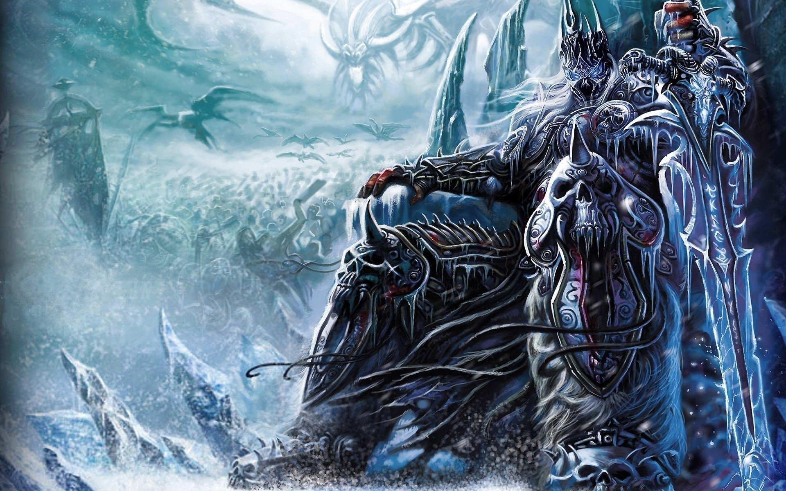

Arthas Menethil
Arthas Menethil, Crown Prince of Lordaeron and Knight of the Silver Hand, was the son of King Terenas Menethil II and heir to the kingdom's throne. He was trained as a paladin by Uther the Lightbringer and became inducted into the Knights of the Silver Hand. Arthas also had a romantic relationship with the sorceress Jaina Proudmoore. Committed to the protection of his people, Arthas was determined to stop the plague of undeath from infecting Lordaeron.
As a young child, he became best-friends with Varian Wrynn and often sparred with him though Arthas was less experienced. He also watched as his future steed, Invincible, grew up. As a youth, Arthas was trained in combat by Muradin Bronzebeard, the brother of the dwarven king Magni Bronzebeard, and became an adept swordsman, while at the same time learned the ways of the Light under the tutelage of Uther the Lightbringer. He also developed a love interest with Jaina Proudmoore when she was staying in Lordaeron on her way to Dalaran where she would be studying, which Arthas offered to escort her to. Some time later, Terenas had arranged a political wedding for Arthas' sister Calia with lord Daval Prestor. Calia was distraught by the decision and when Arthas tried to calm her, she wished that Arthas would chose his wife and the future queen of Lordaeron out of love, rather than politics.
Despite his promising beginnings, Arthas became one of the most dark and powerful beings Azeroth would ever know. Although he killed the necromancer Kel'Thuzad, he was unable to stop the plague's spread and resorted to increasingly desperate methods, such as purging the city of Stratholme from its infected. Taking up the cursed runeblade called Frostmourne, Arthas was finally able to defeat the undead leader Mal'Ganis, but in so doing he lost his soul. Becoming a death knight of the Scourge, he led the undead forces in destroying Lordaeron, Quel'Thalas and Dalaran. Arthas afterwards made his way to the Frozen Throne of Icecrown, and merged with the Lich King.
Ruling as the dominant personality of the Lich King for years, Arthas was defeated in combat by adventurers of the Alliance and the Horde. Cradled by the spirit of his father, King Terenas, Arthas Menethil died, leaving the mantle of the Lich King to be taken by a noble soul who would forever more keep the Scourge at bay.